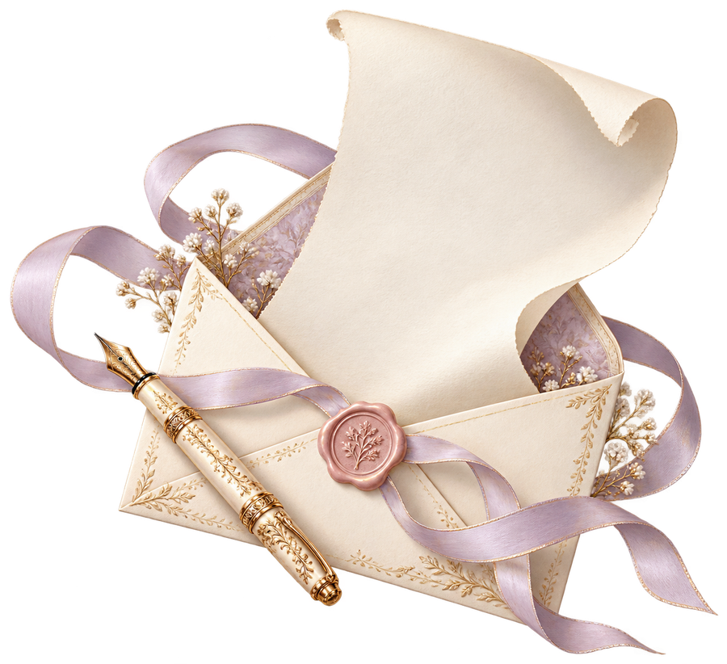

あの山の見える町を、覚えています。春の花や夏の夕暮れを思うと、今でも心が温かくなります。
B08 和紙の便り

写真 01
ご本人・ふるさとなどの写真
ご提供後に差し込みます
私の歩んだ人生
懐かしい日々へ
覚えていますか。あの頃の、私へ。
写真 01
ご本人・ふるさとなどの写真
ご提供後に差し込みます
小さな瓶に庭の花を飾った私へ。何でもない日が特別になる、あの楽しみを今も大切にしていますよ。
図書室で本を選び、友人と手紙を交わしましたね。好きな言葉を届ける喜びは、あの頃に教わりました。
働くようになって、知ったこと
お店で働くようになり、丁寧に包むこと、よく聞くことを学びました。ひと言が、人の表情を和らげるのですね。
家族の食卓では、楽しい話も困った話もしました。同じ場所で時を重ねられたことを、今はありがたく思います。
暮らしに区切りがあっても、新しい楽しみは見つかりました。好きなことをする時間は、今日にも続いています。
追伸：歩んだ年の記録
- ふるさとで生まれる
身近な風景に囲まれて育つ。
- 学びから、新しい暮らしへ
人との出会いから、少しずつ世界が広がる。
その年の世の中：東京オリンピック開催 日本オリンピック委員会
- 仕事と日々を重ねる
目の前のことに向き合いながら歩む。
その年の世の中：大阪で日本万国博覧会開催 外務省
- 好きなことを大切に
暮らしの中に、新しい楽しみを見つける。
その年の世の中：元号が平成から令和へ 内閣府
- いま、そしてこれから
感謝と小さな希望を胸に、時を重ねる。
趣味・思い出・喜びと苦難
あなたに話したい、いくつかのこと。
写真 03
旅・思い出などの写真
ご提供後に差し込みます
旅先のことを、少し。
友人と列車で温泉の町へ行きました。道に迷って笑ったことも、窓辺のお茶も、あなたに話したくなる思い出です。
変わらず、好きでいること。
今も布を選び、針を進める時間が好きです。花を飾り、歌を口ずさみながら、日々を楽しんでいます。
思い出すと、笑顔になること。
手作りの袋を喜んでもらえたことがありました。誰かを思って作ったものが役立つと、こんなに嬉しいのですね。
ひとりではなかった、と気づいたこと。
人を頼ることが苦手でも、話を聞いてもらい助けられました。自分にも周りにも、もう少し優しくありたいと思います。
今の私と未来へのメッセージ
今の私から、大切なあなたへ
伝えそびれた想いを、この手紙に。
今の私は、散歩の花を眺めたり、手帳に書いたりしています。本や人との時間も、無理なく大切にしています。
ありがとう。
声をかけてくれたあなたへ。一緒に笑う友人へ。見守る家族へ。たくさんの優しさを、本当にありがとう。
これからを歩くあなたには、美しさを味わってほしい。嬉しいことは分け合い、困った時には声をかけてくださいね。
季節の庭へ出かけたり、大切な人に手紙を書いたり。まだしたいことがあります。また、お便りしますね。